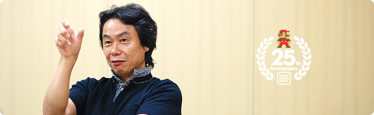
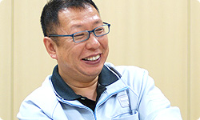
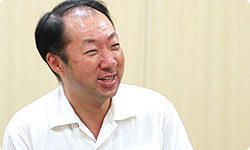
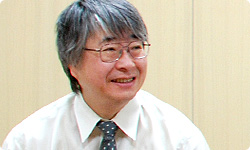
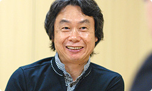

### 「スーパーマリオ２５周年」

<DIV ID="volbox-5"><P CLASS="volnum1"><A CLASS="btn-volnum1" TITLE="社長の代わりに糸井重里さんが訊く" HREF="../vol1/index.html">社長の代わりに糸井重里さんが訊く
<P CLASS="volnum2"><A CLASS="btn-volnum2" TITLE="ファミコンとマリオ 篇" HREF="../vol2/index.html">ファミコンとマリオ 篇
<P CLASS="volnum3"><A CLASS="btn-volnum3" TITLE="『スーパーマリオ』シリーズ開発経験者 篇 その１" HREF="../vol3/index.html">『スーパーマリオ』シリーズ開発経験者 篇 その１
<P CLASS="volnum4"><A CLASS="btn-volnum4" TITLE="『スーパーマリオ』シリーズ開発経験者 篇 その２" HREF="../vol4/index.html">『スーパーマリオ』シリーズ開発経験者 篇 その２
<P CLASS="volnum5"><A CLASS="btn-volnum5s" TITLE="『スーパーマリオ』生みの親たち 篇" HREF="../vol5/index.html">『スーパーマリオ』生みの親たち 篇

<DIV ID="main-visual">
<H2>
<DIV ID="pagebox-wrap">
<DIV CLASS="pagebox">
<P CLASS="pagenum"><A HREF="index.html">1. 十字ボタンを押してジャンプ
<P CLASS="pagenum"><A HREF="index2.html">2. 入社１年目の新人も
<P CLASS="pagenum"><A HREF="index3.html">3. “集大成”のソフトに
<P CLASS="pagenum"><A HREF="index4.html">4. ２人でいっしょにコースデザイン
<P CLASS="pagenum"><A HREF="index5.html">5. “メモリ減らし”のために
<P CLASS="pagenum"><A HREF="index6.html">6. “スーパーマリオ保存会”
<P CLASS="pagenums"><A>7. 京都文化のように

<DIV>

<DIV ID="int-box-wrap">
<H3>
<DIV CLASS="int-box"><DIV CLASS="int-name"><P>岩田
<DIV CLASS="int-text"><P>みなさんが四半世紀の昔から、２５年間ずっと<br>いっしょにモノづくりを続けられる理由は何だと思いますか？
<DIV CLASS="clear"><DIV CLASS="int-box"><DIV CLASS="int-name"><P>宮本
<DIV CLASS="int-text"><P>３人とも性格はぜんぜん違うんですよ。
<DIV CLASS="clear"><DIV CLASS="int-box"><DIV CLASS="int-name"><P>岩田
<DIV CLASS="int-text"><P>はい、すごく違うと思います（笑）。
<DIV CLASS="clear"><DIV CLASS="int-box"><DIV CLASS="int-name"><P>宮本
<DIV CLASS="int-text"><P>けど「オレはお前の考えについていけん」というのは<br>１回もないんです。
<DIV CLASS="clear"><DIV CLASS="int-box"><DIV CLASS="int-name"><P>手塚
<DIV CLASS="int-text"><P>ないですね。
<DIV CLASS="clear"><DIV CLASS="int-box"><DIV CLASS="int-name"><P>中郷
<DIV CLASS="int-text"><P>ないない。
<DIV CLASS="clear"><DIV CLASS="int-box"><DIV CLASS="int-name"><P>岩田
<DIV CLASS="int-text"><P>確かに大きく対立しているのは見たことがありませんね。
<DIV CLASS="clear"><DIV CLASS="int-box"><DIV CLASS="int-name"><P>宮本
<DIV CLASS="int-text"><P>意見は違うと思うんですけど。
<DIV CLASS="clear"><DIV CLASS="int-box"><DIV CLASS="int-name"><P>岩田
<DIV CLASS="int-text"><P>少なくとも、あとにひくような衝突は見たことないです。
<DIV CLASS="clear"><DIV CLASS="int-box"><DIV CLASS="int-name"><P>中郷
<DIV CLASS="int-text"><P>ないです。
<DIV CLASS="clear"><DIV CLASS="int-box"><DIV CLASS="int-name"><P>宮本
<DIV CLASS="int-text"><P>不思議ですね。どうしてなんでしょう・・・。<br>もしかしたら共生関係にあるん違うかな？
<DIV CLASS="clear"><DIV CLASS="int-box"><DIV CLASS="int-name"><P>岩田
<DIV CLASS="int-text"><P>共生関係、ですか？
<DIV CLASS="clear"><DIV CLASS="int-box"><DIV CLASS="int-name"><P>宮本
<DIV CLASS="int-text"><P>お互いに、こいつは生かしておいたほうが、<br>自分のためにもなるしと、<br>なんかそういうことを思っているのかなと（笑）。<br>クマノミとイソギンチャクの関係<sup>（※19）</sup>じゃないですけど。
<DIV CLASS="clear"><DIV CLASS="int-box"><DIV CLASS="int-name"><P>一同
<DIV CLASS="int-text"><P>（笑）
<DIV CLASS="notes-box"><DIV CLASS="notes-num"><P>※19
<DIV CLASS="notes-text"><P>クマノミとイソギンチャクの関係＝共生関係を説明するときによく使われる例。イソギンチャクの触手の周辺に生息するクマノミは、外敵から襲われる心配がなく、イソギンチャクはクマノミの食べ残しを得ることで、お互いにメリットを享受しながら生きていると言われている。

<DIV CLASS="clear">
<DIV CLASS="clear">

<DIV CLASS="clear">
<DIV CLASS="clear"><DIV CLASS="int-box"><DIV CLASS="int-name"><P>宮本
<DIV CLASS="int-text"><P>自分にできないものを持っているところを<br>お互いに尊重しているというか・・・。
<DIV CLASS="clear"><DIV CLASS="int-box"><DIV CLASS="int-name"><P>岩田
<DIV CLASS="int-text"><P>たぶん、自分にないものに対するリスペクトが徹底していて、<br>三すくみの共生関係にあるんでしょうね（笑）。
<DIV CLASS="clear"><DIV CLASS="img-photo">
<DIV CLASS="int-box"><DIV CLASS="int-name"><P>宮本
<DIV CLASS="int-text"><P>うん、それはあるような気がしますね。<br>だから、しょうもないところでぶつかったとしても<br>「そんなんしょうもないもんな」で、すんじゃうんですよ。
<DIV CLASS="clear"><DIV CLASS="int-box"><DIV CLASS="int-name"><P>手塚
<DIV CLASS="int-text"><P>はい。
<DIV CLASS="clear"><DIV CLASS="int-box"><DIV CLASS="int-name"><P>宮本
<DIV CLASS="int-text"><P>それに、いっしょに食事に行って、<br>同じものを注文して、それを食べながら<br>「おいしいなあ」と言っているとなごむんです（笑）。
<DIV CLASS="clear"><DIV CLASS="int-box"><DIV CLASS="int-name"><P>中郷
<DIV CLASS="int-text"><P>確かに、いつもお菓子を食べながらやってますね。
<DIV CLASS="clear"><DIV CLASS="int-box"><DIV CLASS="int-name"><P>手塚
<DIV CLASS="int-text"><P>この間も、淡路島のせんべいを大量に取り寄せて、<br>それを食べながら、いろいろ話をしました（笑）。
<DIV CLASS="clear"><DIV CLASS="int-box"><DIV CLASS="int-name"><P>宮本
<DIV CLASS="int-text"><P>いや、それは、中郷さんと２人だけでしてるでしょ。<br>僕はその“せんべいの会”には入ってませんから（笑）。
<DIV CLASS="clear"><DIV CLASS="int-box"><DIV CLASS="int-name"><P>一同
<DIV CLASS="int-text"><P>（笑）
<DIV CLASS="clear"><DIV CLASS="int-box"><DIV CLASS="int-name"><P>岩田
<DIV CLASS="int-text"><P>みなさん、ありがとうございました。<br>さて、５回にわたって社長が訊く「スーパーマリオ２５周年」の<br>インタビューをしてきましたが、これが最後の質問です。<br>みなさんから、これからの『マリオ』シリーズへの抱負をお願いします。
<DIV CLASS="clear"><DIV CLASS="int-box"><DIV CLASS="int-name"><P>中郷
<DIV CLASS="int-text"><P>僕は“保存会”として・・・。
<DIV CLASS="clear"><DIV CLASS="int-box"><DIV CLASS="int-name"><P>宮本
<DIV CLASS="int-text"><P>そのネタは僕がもう言いました（笑）。
<DIV CLASS="clear"><DIV CLASS="int-box"><DIV CLASS="int-name"><P>一同
<DIV CLASS="int-text"><P>（笑）
<DIV CLASS="clear"><DIV CLASS="int-box"><DIV CLASS="int-name"><P>岩田
<DIV CLASS="int-text"><P>では、手塚さんから。
<DIV CLASS="clear"><DIV CLASS="int-box"><DIV CLASS="int-name"><P>手塚
<DIV CLASS="int-text"><P>『NewスーパーマリオWii』で、<br>家族みんなで遊ぶということが定着したのかなと思うんです。
<DIV CLASS="clear"><DIV CLASS="int-box"><DIV CLASS="int-name"><P>岩田
<DIV CLASS="int-text"><P>そうですね。もともと初代『スーパーマリオ』も<br>家族みんなで遊ばれていたと思うんです。<br>そのような時代に、『NewスーパーマリオWii』は一気に引き戻し、<br>さらに広がったという感じがありますよね。
<DIV CLASS="clear"><DIV CLASS="int-box"><DIV CLASS="int-name"><P>手塚
<DIV CLASS="int-text"><P>はい。ですから、家族をつなぐための“道具”のように、<br>今後もその方向は大事にしたいと思っています。<br>しかも、違うものにするよりも、そのいい部分を<br>もっとふくらませるための“道具”にしていきたいですね。
<DIV CLASS="clear"><DIV CLASS="img-photo">
<DIV CLASS="int-box"><DIV CLASS="int-name"><P>岩田
<DIV CLASS="int-text"><P>近藤さんはどうですか？
<DIV CLASS="clear"><DIV CLASS="int-box"><DIV CLASS="int-name"><P>近藤
<DIV CLASS="int-text"><P>僕はゲームをつくっているほうじゃなくって、<br>できたゲームに音楽をはめる担当ですので、<br>どういうゲームにしていくというのは<br>きっちり言えないんですけど、<br>やっぱりいい曲をつくりたいという気持ちが強いですね。<br>もっと面白いゲームができたら、いままでよりも楽しい、<br>いい曲を入れたいなと思います。
<DIV CLASS="clear"><DIV CLASS="img-photo">
<DIV CLASS="int-box"><DIV CLASS="int-name"><P>手塚
<DIV CLASS="int-text"><P>僕らから見た近藤さんは、<br>音楽が入る前のゲームを遊んでもらったときに、<br>とても率直な第一印象を語ってくれるのですごく参考になるんです。
<DIV CLASS="clear"><DIV CLASS="int-box"><DIV CLASS="int-name"><P>岩田
<DIV CLASS="int-text"><P>あてになるんですね、近藤さんの第一印象が。
<DIV CLASS="clear"><DIV CLASS="int-box"><DIV CLASS="int-name"><P>手塚
<DIV CLASS="int-text"><P>そうなんです。
<DIV CLASS="clear"><DIV CLASS="int-box"><DIV CLASS="int-name"><P>岩田
<DIV CLASS="int-text"><P>いい曲を生み出してくれるということと、<br>ひじょうに素直な印象を聞かせてくれるという、２つの点で、<br>これからも近藤さんはチームに貢献されるんでしょうね。
<DIV CLASS="clear"><DIV CLASS="int-box"><DIV CLASS="int-name"><P>近藤
<DIV CLASS="int-text"><P>はい、頑張ります（笑）。
<DIV CLASS="clear"><DIV CLASS="int-box"><DIV CLASS="int-name"><P>岩田
<DIV CLASS="int-text"><P>中郷さんはどうですか？
<DIV CLASS="clear"><DIV CLASS="int-box"><DIV CLASS="int-name"><P>中郷
<DIV CLASS="int-text"><P>さっきの“保存会”の話にも関連するんですけど、<br>昔から会社のなかでずっと言っていることがありまして、<br>「プログラマーとして匠（たくみ）の世界をめざしましょう」と。
<DIV CLASS="clear"><DIV CLASS="int-box"><DIV CLASS="int-name"><P>岩田
<DIV CLASS="int-text"><P>匠ですか。
<DIV CLASS="clear"><DIV CLASS="int-box"><DIV CLASS="int-name"><P>中郷
<DIV CLASS="int-text"><P>はい。たとえば「このコースにブロックを１個置こう」と<br>家元の宮本さんから言われたら、それが無理な注文でも<br>わたしたちは匠のワザでちゃんと仕上げるんです。
<DIV CLASS="clear"><DIV CLASS="int-box"><DIV CLASS="int-name"><P>岩田
<DIV CLASS="int-text"><P>あははは（笑）。
<DIV CLASS="clear"><DIV CLASS="int-box"><DIV CLASS="int-name"><P>中郷
<DIV CLASS="int-text"><P>それがわたしの抱負ですし、そもそもわたしたちは<br>つくること自体を楽しんでいるところがあるんですね。
<DIV CLASS="clear"><DIV CLASS="int-box"><DIV CLASS="int-name"><P>岩田
<DIV CLASS="int-text"><P>自分たちが楽しみながらつくり、<br>なおかつお客さんにウケているのを実感できるんですから、<br>それはさらに楽しくなりますよね。
<DIV CLASS="clear"><DIV CLASS="int-box"><DIV CLASS="int-name"><P>中郷
<DIV CLASS="int-text"><P>ええ、ホントに楽しいです。
<DIV CLASS="clear"><DIV CLASS="img-photo">
<DIV CLASS="int-box"><DIV CLASS="int-name"><P>岩田
<DIV CLASS="int-text"><P>宮本さんはどうですか？
<DIV CLASS="clear"><DIV CLASS="int-box"><DIV CLASS="int-name"><P>宮本
<DIV CLASS="int-text"><P>僕は、「家族で楽しめるものに」という<br>手塚さんがさっき言ったことはその通りだと思うんですけど、<br>マリオというキャラクターの基本としては、<br>つねに先端の技術をどんどん利用して、<br>見たことのないものに仕上げていくことが大事だと思っているんです。<br>そんななかで、「落ちるのがいちばん楽しいんですよ」<br>というところももちろん大事なんですけど、<br>やっぱりそれ以外の面でも新しい何かが必要で、<br>それがあってこその『スーパーマリオ』だと思うんです。
<DIV CLASS="clear"><DIV CLASS="img-photo">
<DIV CLASS="int-box"><DIV CLASS="int-name"><P>岩田
<DIV CLASS="int-text"><P>一般的な見方からすると、<br>宮本さんは先端技術を追い求めているわけじゃないと、<br>そんなふうに思い込まれているふしもあるように感じるんですが、<br>実は、最新のビデオゲーム技術についても<br>貪欲に取り入れようとするこだわりと姿勢を昔から強く感じるんです。<br>だからこそ、『マリオ』が２５年経っても<br>古びなかったように思うんですね。<br>&nbsp;<br>しかも、Wiiからはじめた人でも、<br>初代の『スーパーマリオ』を違和感なく遊べるのは、<br>先ほど近藤さんがおっしゃった“快感成分”も含めて<br>土台の部分がしっかりつくられているからだと思うんです。<br>ですから、古い部分と新しいものがうまく融合していることが<br>長持ちの秘訣なのかなというふうに思いますね。
<DIV CLASS="clear"><DIV CLASS="img-photo">
<DIV CLASS="int-box"><DIV CLASS="int-name"><P>宮本
<DIV CLASS="int-text"><P>それって、実は京都文化なんですよ。
<DIV CLASS="clear"><DIV CLASS="int-box"><DIV CLASS="int-name"><P>岩田
<DIV CLASS="int-text"><P>ああ、京都ならではの文化なんですね。
<DIV CLASS="clear"><DIV CLASS="int-box"><DIV CLASS="int-name"><P>宮本
<DIV CLASS="int-text"><P>とても古いお寺でも、最新の技術を使って<br>ライトアップしたりしているでしょう。<br>そのように、新しいものをどんどん吸収しながら、<br>伝統を活かしていくというのが京都の文化だと思うんです。<br>でも、とくに日々それを意識して<br>つくっているわけじゃないですけど（笑）。
<DIV CLASS="clear"><DIV CLASS="int-box"><DIV CLASS="int-name"><P>岩田
<DIV CLASS="int-text"><P>でも、任天堂が京都で生まれ、<br>そこに存在し続けていることは<br>やっぱり明らかに影響していますよね。<br>わたしは生まれも育ちも京都ではありませんけど、<br>いまの話を聞いていると、きっとそうなんだろうと思います。
<DIV CLASS="clear"><DIV CLASS="int-box"><DIV CLASS="int-name"><P>宮本
<DIV CLASS="int-text"><P>そうですね。<br>そこで、『スーパーマリオ』の伝統に<br>新しい技術を取り入れようということで<br>ニンテンドー3DS用の新しい『マリオ』を今つくってます。
<DIV CLASS="clear"><DIV CLASS="int-box"><DIV CLASS="int-name"><P>岩田
<DIV CLASS="int-text"><P>“スーパーマリオ保存会”の次なる活動の舞台は<br>ニンテンドー3DSですね。
<DIV CLASS="clear"><DIV CLASS="int-box"><DIV CLASS="int-name"><P>宮本
<DIV CLASS="int-text"><P>はい（笑）。<br>ニンテンドー3DSで新しい『マリオ』がどうなるのか、<br>みなさんに早くお見せしたいですね。
<DIV CLASS="clear"><DIV CLASS="int-box"><DIV CLASS="int-name"><P>岩田
<DIV CLASS="int-text"><P>わたしもとても楽しみにしています。<br>今日はどうもありがとうございました。
<DIV CLASS="clear"><DIV CLASS="int-box"><DIV CLASS="int-name"><P>一同
<DIV CLASS="int-text"><P>ありがとうございました。
<DIV CLASS="clear"><DIV ID="asks-pagination">
<DIV ID="page-prev"><A HREF="index6.html">6. “スーパーマリオ保存会”
<DIV CLASS="clear">
<DIV CLASS="clear">
<DIV ID="ftr">
<P CLASS="home"><A HREF="../../../../index.html">任天堂ホームページ
<P CLASS="pagetop"><A HREF="#pagetop">ページの一番上へ
<DIV CLASS="clear">

<DIV CLASS="clear">
</BODY>
</HTML>
